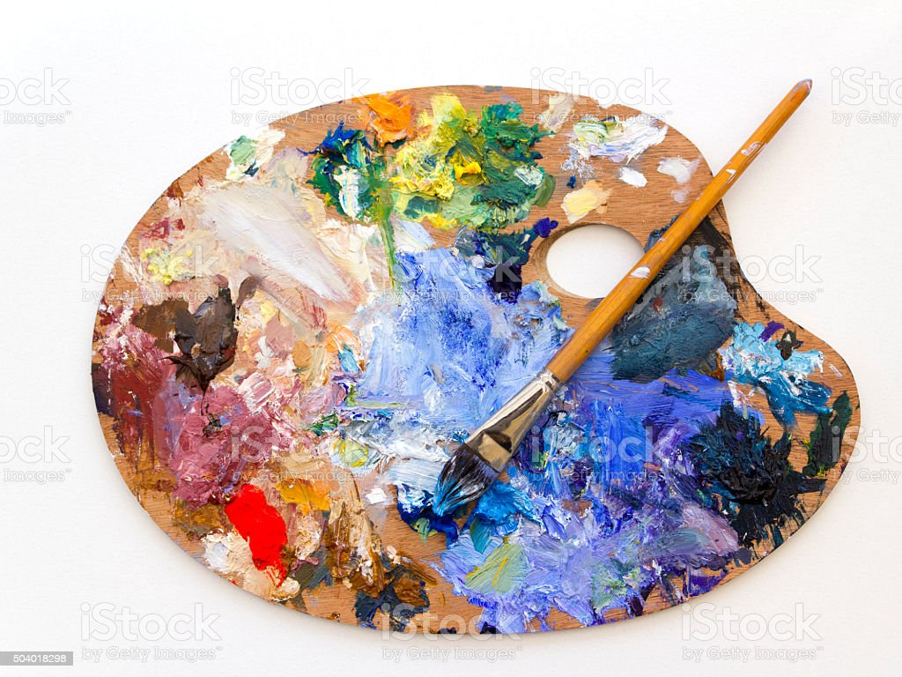

Quick hummus recipe
Ingredients
- 1 can (400g) of peas (garbanzo beans)
- 175g of tahini
- 6 sundried tomatoes
- Half a red pepper
- A pinch of cayenne pepper
- 1 clove of garlic
- A dash of olive oil
Quick hummus recipe
Ingredients
- 1 can (400g) of peas (garbanzo beans)
- 175g of tahini
- 6 sundried tomatoes
- Half a red pepper
- A pinch of cayenne pepper
- 1 clove of garlic
- A dash of olive oil

I colori
- Colori primari
- Rosso, verde, blu
- Colori secondari
- Giallo + Rosso = Arancione
Giallo + Blu = Verde
Rosso + Blu = Viola
I colori
- Colori primari
- Rosso
- verde
- Blu
- Colori secondari
- Giallo + Rosso = Arancione
- Giallo + Blu = Verde
- Rosso + Blu = Viola